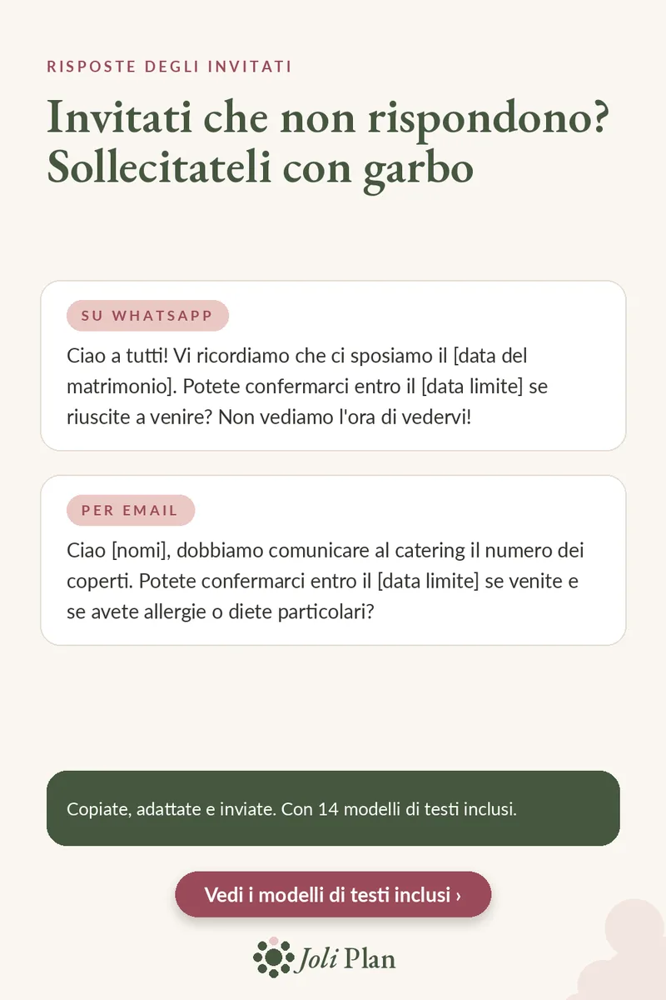

Invitati
Invitati che non rispondono: due messaggi per sollecitarli con garbo
Aggiornato il 25/10/2026
La data limite è passata e qualche invitato non ha ancora risposto. La cosa più semplice è un messaggio breve e cordiale con una nuova scadenza. Ecco due modelli da copiare.
Vedi il planner del matrimonio su Etsy ›

Su WhatsApp
Ciao a tutti! Vi ricordiamo che ci sposiamo il [data del matrimonio]. Potete confermarci entro il [data limite] se riuscite a venire? Non vediamo l'ora di vedervi!
Per email
Ciao [nomi], dobbiamo comunicare al catering il numero dei coperti. Potete confermarci entro il [data limite] se venite e se avete allergie o diete particolari?
Come usarli bene
- Sostituite i dati tra parentesi quadre e aggiungete qualcosa di personale.
- Indicate sempre una nuova data limite: una scadenza precisa è più chiara.
- Scegliete il canale che usa ogni invitato: WhatsApp per i più vicini, email per gli altri.
- Segnate ogni risposta appena arriva, per non chiedere due volte.